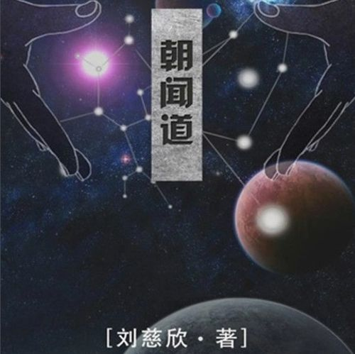

《三体》

《三体》是刘慈欣创作的长篇科幻小说系列，共三部，由《三体》《三体2：黑暗森林》《三体3：死神永生》组成。
《朝闻道》
人类建了一个超大粒子加速器“爱因斯坦赤道”，在即将启动时，宇宙的排险者出现并毁了加速器，于是科学家们想用生命换取想知道的真理
《超新星纪元》
强劲的粒子洪流跨越冷漠的宇宙空间抵达地球，所有成年人的基因都遭到不可修复的破坏，地球上将只剩下了十三岁以下的孩子，孩子国家领导人开始掌控着这个世界
天马行空的奇思妙想
《三体》是刘慈欣创作的长篇科幻小说系列，共三部，由《三体》《三体2：黑暗森林》《三体3：死神永生》组成。
人类建了一个超大粒子加速器“爱因斯坦赤道”，在即将启动时，宇宙的排险者出现并毁了加速器，于是科学家们想用生命换取想知道的真理
强劲的粒子洪流跨越冷漠的宇宙空间抵达地球，所有成年人的基因都遭到不可修复的破坏，地球上将只剩下了十三岁以下的孩子，孩子国家领导人开始掌控着这个世界